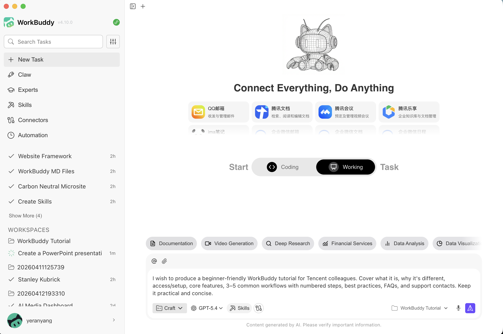

Q1
预测下一个词的语言生成，本质是什么？
是把一句话的联合概率拆成逐词的条件概率，再挑出（或按概率抽取）下一个词——可以看作 n 元语言模型（马尔可夫链）的自然推广。输出层的 Softmax，在数学形式上与统计物理中的玻尔兹曼分布 / 吉布斯分布同构；训练时最小化的是交叉熵，即预测与真实下一个词之间的差距。 语言生成与统计物理、信息论之间，确实有可以类比的数学结构——这是一种类比，不是说模型在「遵循物理定律」。
用 WorkBuddy 上手：说清需求、核对结果、沉淀做法
今天不做功能清单。我们从一份普通的例会记录出发，
把一件工作交代清楚、验收好，再把可靠的方法留下来。
先想你自己的一件工作，而不是先看工具有多少功能。
只显示即时总数，不记录任何个人材料。图表从 0 开始，未点击时为空。
同一份材料，从第一页用到最后一页。
张工位调整，最后弄完了没有？
李弄完了，靠窗那几张换了。
小刘收了，九十多份吧，具体我没细数…
陈两万是去年的吧，今年好像砍了一点…
张那再定，群里问一圈吧。
原材料里下次例会时间没定，所以只写征询草稿；不补一个日期让任务看起来完成。
—理解 AI
Symbolism · 基于逻辑推理
用规则和知识库编码专家的思维。代表：专家系统、知识图谱。硬编码，脆弱。
Connectionism · 基于统计学习
模拟神经元连接，从海量数据里学规律。代表：CNN、RNN、AlphaGo。会自己学。
Foundation Models · 能力开始涌现
Transformer → GPT → 推理 → Agent。规模跨过临界点，会推理、会做事。
时间轴综合参考：Andrew Ng 斯坦福 CS230 · Fei-Fei Li ImageNet · Yann LeCun Deep Learning History · 华为开发者社区 AI 简史
本轮浪潮的底座是连接主义：机器从人类历史数据中学习并归纳规律。它不是被“编程”出来的，而是被“训练”出来的——这一点，决定了后面的一切。
—理解 AI
大模型主要通过从海量数据中学习来构建能力，其本质是一种基于统计的方法，依赖于统计规律，而非逻辑推理。给定上文，预测下一个最可能出现的语言符号（Token）。
结构本质：输入 中 · 华 · 人民 → 神经网络计算权重 → 输出下一个 Token 的概率分布（Softmax）。它把“学到的世界”编码进了亿万个连接的权重里。
预测下一个词的语言生成，本质是什么？
是把一句话的联合概率拆成逐词的条件概率，再挑出（或按概率抽取）下一个词——可以看作 n 元语言模型（马尔可夫链）的自然推广。输出层的 Softmax，在数学形式上与统计物理中的玻尔兹曼分布 / 吉布斯分布同构；训练时最小化的是交叉熵，即预测与真实下一个词之间的差距。 语言生成与统计物理、信息论之间，确实有可以类比的数学结构——这是一种类比，不是说模型在「遵循物理定律」。
神经网络为何能通过学习，记住世界百科知识？
通过人工神经网络架构（ANN），靠激活函数与权重在训练中不断更新获得。 其本质是学习并形成一种高效的信息与知识编码——把亿万数据压进有限的参数里，把“世界”塞进权重里。
它擅长接着写「像样的一段」，但「像样」不是「查过」。
从大量文本中学「什么接着什么比较常见」。
示范与偏好反馈，让它更贴合人的要求。
你提供的原文与要求，会进入这一次回答。
明确的交付格式、边界与验收标准，能让结果更贴近用途。
有实验发现：在合适任务上 AI 辅助带来收益，在另一些任务上表现反而变差。
—理解 AI
从一问一答到自主干活——可以粗略理解为三个阶段。它不是严格的行业分期，而是一条帮助普通用户理解 AI 能力变化的路径。
ChatGPT 等大语言模型出现。你问，它答——能写文章、做翻译、生成代码。但只是一段对话，说完就结束。你负责把对话结果变成实际行动。
AI 开始学会调用工具——搜索网页、读取文件、操作数据。能做单一任务了，但范围有限，每一步都还需要你确认和推动。
WorkBuddy。140+ AI 角色各司其职——运营定策略、设计出图、开发写代码、营销写文案。你设定目标，专家团自主规划、执行、交付。
关键洞察：变化不只来自模型能力，也来自 AI 开始具备连续执行、调用工具和管理上下文的能力。你给出目标，在关键节点确认，并最终审阅结果。
—理解 AI
技术演进背后有一条脊柱——每一次跃迁，机器都从人手里接过一样东西。
01 · 第一跃 · 算得快
机器接过了 “手”——存储与计算。能记、能算，比人快亿万倍。
Think: 算 · 存 · 传
02 · 第二跃 · 看得懂 · 想得通
机器接过了 “脑”——能听会说、能看会认，进而能推理会思考。
Think: 看 · 听 · 说 · 写
03 · 第三跃 · 自己去做
机器接过了 “手脚”——自己拆解目标、调用工具、执行、交付。
Think: 规划 → 行动 → 反思 → 交付
下一页 计算 → 认知 → 自主。那自主智能（Agent）究竟是怎么运作的？
—理解 AI
一句话总结
Agent 不是让 AI “更聪明”，而是让 AI 从“回答问题”走向“完成任务”——用自然语言说出目标，它自己感知上下文、拆解步骤、调用工具、交付可评审的结果。
The Perception–Action Cycle · 感知-行动闭环
五个阶段环环相扣，每一环的输出是下一环的输入——是闭环，不是流水线。
感知 Perception
从文件、工具、用户输入等多源信息里，把当前情境拼起来。
推理 Reasoning
理解情境，判断什么最重要、什么是当前的关键约束。
规划 Planning
把目标拆解为步骤，选择当前最优的执行路径。
行动 Action
调用工具与系统去做——不只是说。
反思 Reflection
检查结果、汲取反馈，让下一轮更好。输出回到感知。
The key insight: The difference isn’t intelligence — the intelligence was always there. The difference is continuity, context, and connection.
核心洞察：差别不在智能本身——智能一直都在。真正的差别在于连续性（Continuity）、上下文（Context）、连接（Connection）。
—理解 AI
一句话说清楚： WorkBuddy 是一个 AI 桌面工作台。你用日常语言描述任务，它可以规划步骤、调用工具，产出可审阅、可继续编辑的交付物，而不只是一段聊天回复。
生成式 AI
01你问，它答。能写文章、做总结、翻译、生成代码——但回答完就结束了。
比如：写一段文案、总结一份文件、生成一段代码
AI 智能体
02一个 AI 智能体专注于特定工作。它能调用工具，比纯对话更自主，但范围相对受限。
比如：搜索、整理文件、排日程、更新数据
自主式 AI
03它围绕目标规划步骤、调用工具并连续推进，产出可供人审阅和继续修改的交付物。
比如：规划 → 协调 → 执行 → 交付
—理解 AI
用日常语言说清楚你想干什么。WorkBuddy 可以读取相关文件、规划步骤并调用工具，产出可审阅、可修改的交付物。一句话可以启动任务，复杂工作仍建议分阶段确认。
核心能力 × 适用场景
可调用 140+ 专家角色——运营、设计、开发、营销等角色分工处理子任务，帮助个人获得团队式协作体验。
可将大目标拆成多个步骤，选择工具和模型连续推进；重要决策和最终结果仍由人确认。
配置微信、企业微信、飞书或钉钉等渠道后，可用手机下发任务；桌面端需保持在线，结果可回传到对应渠道。
直接操作你授权文件夹里的 Word、Excel、PPT、PDF、代码——打开、编辑、生成、导出一条龙。
—理解 AI
你用的 ChatGPT 和 WorkBuddy 不是一回事。前者是对话工具，后者是工作搭档。
前面几页讲「它为什么会这样」，接下来讲「第一次怎么把它用起来」。
把任务说清楚，比什么技巧都重要
不要指望第一轮就完美
逐步提升结果质量
涉及真实文件时：先稳，再快
四步顺序来自 WorkBuddy 官方文档《10 个上手技巧》的「推荐上手顺序」。今天现场完整走前两步，后两步可以会后按材料自己试。
不用「自动化等级」来分类，看三个具体位置。
据中国经济新闻网 2026 年报道，郭毅可强调让机器承担事务性工作，人参与设定目标、价值判断与承担责任。
中国经济新闻网，2026-07-30 ↗这也是接下来 38 分钟现场演示的路线。
把用途、边界和验收写具体
回原文查依据、遗漏与补全
留下方法卡，换材料再试
—人机分工
不是把要求一次塞满，而是沿着一条清晰路径推进：先说清楚，再分步审阅，最后安全放大。
任务、素材、受众、约束和输出格式，至少说清三项。
每一步都能看、能改、能回退，避免最后才发现方向错了。
先在测试目录跑通；确认稳定后，再扩大文件范围与执行频率。
不必一次记完。今天现场走第 1—3 条，其余在后面几页和会后材料里。
10 条标题与顺序来自 WorkBuddy 官方文档，每条下面的一句话是简要说明。完整内容可在尾页下载《官方上手 10 技巧》。
先判断能不能交，再决定怎么交。
按单位规定判断，只授权当前任务真正需要的目录。真实工作材料先脱敏、先获准；脱敏不等于自动批准上传。
看清运行位置与默认权限；在本机运行不等于所有处理都不联网。删除、外发、批量修改先看预览再确认；涉及额外工具或上传，先停下来问。
只出草稿；不发消息、不删文件、不付款、不自动建日程，也不公开发布演示产物。
不要直接输入密码、API Key、SSH 私钥，未脱敏的客户或合同数据，以及无必要的整库、整盘内容。界面里的运行位置、工作模式、权限是几组不同设置，发送前看清楚。
—现场协作
Data path
只选择完成任务所需的文件夹；先确认范围，再开始操作。
范围由你选择文件处理默认在本机进行；配置、记忆与操作结果可由你管理。
先预览，再确认调用云端或第三方模型时，完成请求所需内容按对应服务规则处理。
敏感任务可选本地模型—现场协作
WorkBuddy 支持套餐模型、第三方模型与本地模型。模型可用范围、积分消耗和活动额度会随套餐与时间变化，使用前应查看账号额度页和最新规则。
套餐模型
按套餐查看可用模型
不同套餐支持的模型不同
自动模式可按任务选择模型
消耗以账号额度页为准
第三方模型
自定义 API / 提供商接入
API Key 仅保存在本地
输入会发送给所选模型服务
费用按第三方规则结算
本地模型
可通过 Ollama 接入
适合更高隐私要求场景
不消耗平台模型积分
速度与效果取决于本机硬件
ⓘ 活动积分、有效期和购买方式属于动态政策，不在分享中固化具体数字。 查看官方模型配置说明 ↗
—现场协作
去官网下载 Mac 或 Windows 版，安装后打开即可。
创建一个新任务，用日常语言描述你想做的事情。
WorkBuddy 会在右侧面板展示结果，你可以直接下载或继续修改。

一个工作台——任务、上下文、工具和结果都在一个窗口里。
安全可控
文件操作以你选择或授权的工作目录为边界，开始前请确认目录范围。
桌面端与文件操作主要在本机运行；使用云端模型时，必要输入会按服务规则处理。
删除文件、对外发送等危险操作会要求二次确认，并展示预览。
不用先学完菜单，只认这一次任务会用到的四个位置。
 1
2
3
1
2
3
 输入区局部
输入区局部帮我整理这份例会记录。
以下为虚构材料，仅在当前任务中生成供审核的文本。 不修改原文、不发送消息、不创建日程或定时任务、不删除文件、不付款。 只处理我提供的材料；涉及额外工具权限、外部资料、上传或分享时先停止并向我确认。
「帮我整理一下」和「我要拿它做什么」，差别在验收标准。
整理成会后可核对、可推进的成果
部门同事与会议主持人
只使用我提供的这段正文
不补年份、姓名、金额、地点或链接
待办清单＋待确认事项＋征询草稿
每条附原文依据；未提供的标「待确认」
官方文档给了一个很朴素的公式：三样东西说齐，就不用让工具猜。
帮我把上次的会议纪要整理一下。
「上次」是哪份、整理成什么样、哪些要标出来，都没说。把指定文件里的会议纪要整理成一份清单，包含每个议题的结论、对应的责任人和截止日期，并标记有争议、未决的事项；用表格输出，不需要开场白。
结论、责任人、截止日期、未决事项、输出格式，一句话里都说到了。三要素公式、两条示范和这句提问都来自 WorkBuddy 官方文档。前面的「需求六格」是同一思路的展开：多出的「对象、边界、验收」，是把「怎么样」拆得更便于核对。
—现场协作
创建新任务
写一句清楚的任务描述
上传文件或贴截图（如果需要）
说明你想要的输出格式
发送任务
在对话区跟踪进展
在结果区审阅输出
好用的入门提示词
把这份会议记录整理成 6 页的执行摘要 PPT。
分析这个电子表格，写一份一页纸的洞察总结。
扫描这个测试文件夹，先列出按日期重命名的预览方案，不要直接修改。
角色 → 视角
「扮演危机公关顾问」和「扮演写这篇报道的记者」产出的内容完全不同。用角色来获得正确的视角，而不仅仅是执行力。
受众 → 语气
「给 CEO 看」vs「给大众看」vs「给技术记者看」——语气完全不同。不要让 WorkBuddy 自己猜。
约束 → 内置 QA
「300 字以内、避免被动语态、中文简体」。把你的检查清单写进提示词里。好的约束能省掉大部分来回修改。
同一份材料，补上交付要求；不是故意给一个坏提示词。
请只依据我提供的例会记录正文，输出三部分： 1. 待办清单：事项、责任人、时间要求、当前状态、原文依据。 2. 待确认事项。 3. 不超过 150 字的「下次例会时间征询消息」草稿， 不是正式会议通知。 未提供的信息标「未提供 / 待确认」；保留原文中的相对 日期；不补年份、姓名、预算、地点或链接。 时间尚未确定，不要替我拟定会议时间。 （另附本页所示的公共安全约束。）
验收不是「找错误」，是逐条确认能不能用。
输出 → 回原文：这句话能在材料里找到吗？
原文 → 看输出：重要事项有没有被漏掉？
没说的日期、金额、人名，有没有被补上？
这是草稿、建议，还是可以直接交付？
左边是原文，右边留给现场的真实输出；不预置 AI 答案。
大任务一次丢过去，往往「写了很多，没有一处满意」。
三轮示例与四种调整方式来自 WorkBuddy 官方文档（节选）。理由很实在：每一步都能先确认方向对不对，发现偏了及时拉回来，而不是最后整份推翻。
把结果分成三种状态，比把它「改到完美」更有用。
把这次「怎样交代、怎样验收」写下来，下次换材料就能用。
把一段讨论记录整理成可核对的成果
只给正文；说明是否允许使用外部资料
列事项 → 分状态 → 写待确认 → 生成草稿
每条有依据；不补未提供信息；可直接审阅
要求额外权限、外部上传、发送消息或删除文件时，先停下向人确认
三张并列的卡，不是三道必走手续。
在本地维护一份可查看、可修改的笔记：记住你的角色与项目背景、偏好的配合方式，以及一起做过的决定；可更正、删除或关闭。
把做法做成可调用的能力；技能市场里先逛现成的，不必自己造轮子。
保存文件、把材料添加到任务；人机双写，小改动手动改、复杂改写选中交给 AI；个人与团队权限分开。
—现场协作
有没有反复跟 AI 说明自己的角色和项目，说了几十遍？WorkBuddy 有记忆——它在你的电脑上维护一小份笔记，下次打开还记得上次聊到哪了。
你可以告诉它自己的角色、团队和项目背景。启用并维护记忆后，它能在后续协作中参考这些信息，减少重复说明。
设定它的名字、说话风格和工作边界。喜欢直接还是温和？输出要简洁还是详细？它会按你喜欢的方式跟你工作。
你可以让它记录值得长期保留的决策、偏好和反馈。下次遇到类似任务时，这些信息可以成为参考。
本地配置和记忆可以查看、维护或删除。具体文件位置与同步方式可能随版本和工作区不同，以客户端设置为准。
—现场协作
生成只是起点。资料库让人、同事与 AI 围绕同一份内容继续修改、审阅、发布和复用，把“交付文件”变成持续生长的工作资产。
Living document
先让 AI 产出 Word、PPT、Markdown、HTML 或数据表初稿。
从空白到第一版小改动直接手动改；复杂改写选中内容后交给 AI。
同区编辑，可撤销团队成员与 Agent 围绕同一份内容继续评论、修改和确认。
人负责判断HTML 可发布为网页；沉淀后的内容还能成为下一次任务的上下文。
从交付到资产方法能复用，当前的事实不能机械照抄。
午间交流活动协调：小周负责收集大家想听的主题，周五前交清单。 小林负责整理收到的主题；活动的具体日期和场地还没定。 大家同意先征询意向，再确定安排。
做法：把方法卡作为参考加入任务。用顺手之后，再考虑做成技能。
定时任务不是「跑满三次」就能通关。
每次拿到的材料结构一致
运行位置、外发路径都已确认
缺输入就停止，不硬凑结果
输出仍要有人检查再使用
官方文档把这三件事排成了一条有先后的路，而不是三个并列的功能。
官方提醒：远程遥控意味着它在你看不见的地方自主行动，一旦执行超出预期，未必来得及叫停。
官方提醒：它可能删掉你想保留的内容、打乱格式或把方向改偏；成熟的做法不是期待它永远不出错，而是提前留好回退方案。
官方给的判断是：重复性高、规则明确、无需实时人工干预的任务，最适合交给自动化处理。
三步顺序、两句提醒与「适合自动化的工作」判断来自 WorkBuddy 官方文档（节选）；功能是否可用，以你手上的客户端为准。
换的是材料，不换的是三个动作。
以上是为说明方法迁移编写的情境示例。
—回到工作
适合谁
操作步骤
示例提示词
根据这份选题简报，帮我写一篇面向普通读者的产品介绍文章。包含一个吸引人的标题、清晰的结构、以及我可以直接修改的初稿内容。
方法还是那三个动作，多的是几种更省力的输入方式。
用「专家」预设角色，让表达框架与关注重点更快对齐
直接把一个你满意的样本给它：「照这个来」
出现「前说后忘」就开新任务，把关键背景重新说简洁
格式化、写模板、整理数据交给工具；精力留给决策与判断
四张卡对应官方技巧第 5、6、7、10 条（节选）。「偷懒」是官方用语，指把标准化动作交给工具。换的是材料，不换的是：说清需求、核对结果、沉淀做法。
—回到工作
这些专家角色不只是换一个名称，而是预置了领域提示、方法框架和相关技能配置。你可以按任务组合不同角色，并行处理子任务，再统一审阅结果。
OPC 一人公司
组合运营、设计、开发、法务等 AI 角色，并行处理不同子任务，再由你统一审阅交付物。
"帮我做一次完整的新品上市方案——从市场调研、定价策略到推广物料。"
内容创作团队
组合研究、写作、设计等角色，从选题策略到图文内容协同推进。
"围绕「远程办公效率」这个主题，产出公众号文章 + 小红书 3 篇 + 短视频脚本。"
—回到工作
4.6 万+
累计已审核发布个人 Skill
100%
Skill 强制安全准入
平台当前明确展示三线并行审核：内容合规过滤、科恩实验室深度漏洞扫描、云鼎实验室 AI 模型安全评估。安装前仍应查看具体 Skill 的安全报告、权限和配置要求。
热门技能
MCP 开放生态
支持自定义技能包和模型配置。连接器可将 WorkBuddy 接入邮箱、日历、在线文档、项目管理等外部系统；不少连接器采用开放的 MCP 标准，并需按各自说明完成授权与配置。
—回到工作
配置微信、企业微信、飞书、钉钉或 QQ 等渠道后，可用手机下发任务。桌面端需保持在线并完成相应授权，执行过程与结果可回传到对应渠道。
四步上手
典型场景
🚀 关联功能：项目（Projects）— 团队协作
「项目」让团队成员与 Agent 在同一空间共享上下文、Skills 和 MCP 等资产，接力推进任务。该能力主要面向企业协作，开放范围以账号与版本为准。 查看官方发布 ↗
—回到工作
5.5.0–5.5.2 的变化可以归纳为两件事：更快进入专业场景，更自然地把现实素材交给 AI 继续处理。
按场景提供专属首页、专家、技能和连接器。不是先研究“该装什么”，而是直接从更贴近行业需求的任务入口开始。
macOS 与 Windows 增加系统分享入口，可将微信聊天记录发送到 WorkBuddy，并在提交前预览转发内容。
新增去文字或水印、图片修复、增强、美颜和透明背景抠图等能力，让已有素材也能进入工作流。
可选择画面比例、是否带声音，并描述不希望出现的内容；适合先明确约束，再生成可审阅的视频草稿。
一个岗位包含很多任务，变化通常先发生在任务层。
ILO—NASK 2025 研究关注岗位任务被生成式 AI 影响的程度，并强调工作转变，而非全岗位自动替代。
不写「四分之一岗位会消失」，也不保证任何人的岗位安全；适应成本不该只由个人承担。
有依据、有状态、有停止条件，比写得漂亮更重要。
发送、删除、付款这类撤不回的动作，不交给自动执行。
从执行者变成提问者、指挥者、意义的守护者；省下的时间用于判断什么值得做，并把方法教给下一个人。
—收尾
不需要读完所有文档。下面四个任务，挑一个你最想解决的，打开 WorkBuddy 试试看。
召唤市场、运营、数据专家并行工作——收集信息、对比竞品、提炼趋势，产出一份结构化的分析报告。
试试看 →配置微信渠道并保持桌面端在线，出门时发条消息——"帮我把下午的录音转成会议纪要"——随后在手机查看执行状态和结果。
试试看 →打开 SkillHub 搜索翻译类技能，先查看安全报告、配置要求和兼容说明，再安装并用一份非敏感材料试运行。
试试看 →告诉它这周的工作、成果和问题，让它整理成周报初稿；你需要核对事实、补充判断并确认最终表述。
试试看 →最快的学习方式，是用它做一件真事；不必读完所有文档，选一件低风险的先做完。
材料可公开或虚构，结果不直接外发
用六格把用途、边界和验收说明白
按四问验收，把做法写成方法卡